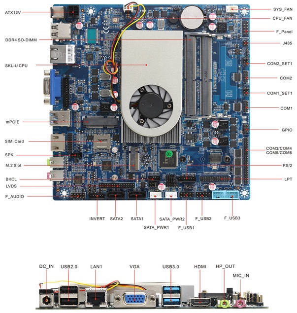

Libretrend LT1000
This page describes how to run coreboot on the Libretrend LT1000 (aka Librebox).

Required proprietary blobs
To build a minimal working coreboot image some blobs are required (assuming only the BIOS region is being modified).
Binary file |
Apply |
Required / Optional |
|---|---|---|
FSP-M, FSP-S |
Intel Firmware Support Package |
Required |
microcode |
CPU microcode |
Required |
FSP-M and FSP-S are obtained after splitting the Kaby Lake FSP binary (done automatically by coreboot build system and included into the image) from the 3rdparty/fsp submodule.
Microcode updates are automatically included into the coreboot image by build system from the 3rdparty/intel-microcode submodule.
The mainboard code also contains a VBT file (version 1.00, BDB version 2.09) which is automatically included into the image by coreboot build system.
Flashing coreboot
Internal programming
The main SPI flash can be accessed using flashrom. It is strongly advised to flash only the BIOS region if not having an external programmer, see known issues.
External programming
The system has an internal flash chip which is a 8 MiB soldered SOIC-8 chip. This chip is located on the top middle side of the board near the CPU fan, between the DIMM slots and the M.2 disk. Use a clip (or solder the wires) to program the chip. Specifically, it’s a Winbond W25Q64FV (3.3V) - datasheet.
Known issues
Fastboot (MRC cache) is not working reliably (missing schematics for CPU to DIMM wiring).
Flashing ME region with already cleaned ME firmware may lead to platform not booting, flashing full ME firmware is needed to recover.
In order to have the USB device wake support from S3 state using the front USB 3.0 ports, one has to move the jumper on DUSB1_PWR_SET header (it will switch the power rails for the USB 3.0 ports).
There are 6 unknown GPIO pins on the board.
Untested
Not all mainboard’s peripherals and functions were tested because of lack of the cables or not being populated on the board case.
LVDS header
Onboard USB 2.0 and USB 3.0 headers
Speakers and mic header
SPDIF header
Audio header
PS/2 header
LPT header
CIR (infrared header)
COM2 port RS485 mode (RS232/RS485 mode is controlled via jumper)
SYS_FAN header
Working
USB
Ethernet
Integrated graphics (with libgfxinit) on VGA and HDMI ports
flashrom
PCIe
NVMe
WiFi and Bluetooth
SATA
Serial ports 1-6
SMBus
HDA (verbs not implemented yet, but works under GNU/Linux (4.15 tested))
Initialization with KBL FSP 2.0
SeaBIOS payload (version rel-1.13.0)
TPM2 (custom module connected to LPC DEBUG header)
Automatic fan control
Platform boots with cleaned ME (MFS partition must be left on SPI flash)
Technology
The platform contains an LR-i7S65T1 baseboard (LR-i7S65T2 with two NICs not sold yet). More details on baseboard site. Unfortunately the board manual is not publicly available.
CPU |
Intel Core i7-6500U |
PCH |
Skylake-U Premium |
Super I/O |
ITE IT8786E |
Coprocessor |
Intel Management Engine |